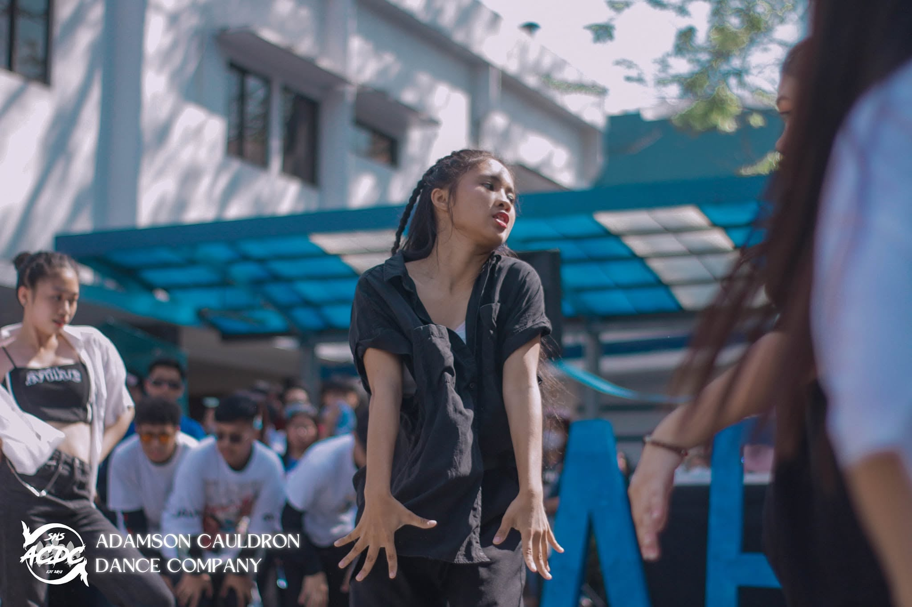

hi, i'm darla
i build things because wondering how something works is usually not enough.
I wasn't always a tech person. Growing up, I was much more interested in biology, environmental science, and the humanities — and I was also the kind of kid who could spend way too long figuring out why a printer suddenly stopped working.
That started to change when I watched a classmate present a project involving robotics and IoT. I thought it was so cool that people could actually build things like that. My Arduino programming class gave me my first real taste of tech, and from there, I slowly started finding my way into it.
I was still figuring out where I fit. I didn't have many women in tech to look up to, and learning technical concepts came with its fair share of frustration. At the same time, I was exploring the things I already loved — biological competitions, and even competing in head dancing for the UAAP.

Looking back, I think all of those interests shaped how I approach the things I do now.
College was where I started finding my place in tech. I joined the AWS Student Builder Group to learn, meet other builders, and get closer to the community. Kate Callao eventually recruited me into the group and helped me grow into a leadership role.
That experience made me pay closer attention to the role of community in an early career. Having people who are willing to teach, share what they know, and make room for others made a real difference in my own journey. It also made me want to create that kind of space for other people.


Today, I'm an AWS SBG Lead, exploring the overlap between technology, people, and ideas. I work on growth research, design, automation workflows, and community-building — with a habit of following whatever new rabbit hole catches my attention.
I'm still early in my career, and there's a lot I'm figuring out as I go. But I've gotten much more comfortable with that. I like learning in public, building with other people, and seeing where a little curiosity can take me.
that's probably the simplest way to describe how I got here.
-
✦
UAAP head dancing competitor
-
✦
first Arduino project — first real taste of building
-
✦
joined AWS Student Builder Group
-
✦
3× AWS certified
-
✦
AWS SBG Lead & Executive Secretary, AWS Cloud Club PH
-
✦
AI Solutions Development Intern, Eskwelabs
- manga
- niche anime corners
- fanfiction
- community building
- design
if you want to talk, email is easiest.
darlanovasumanting06@gmail.com